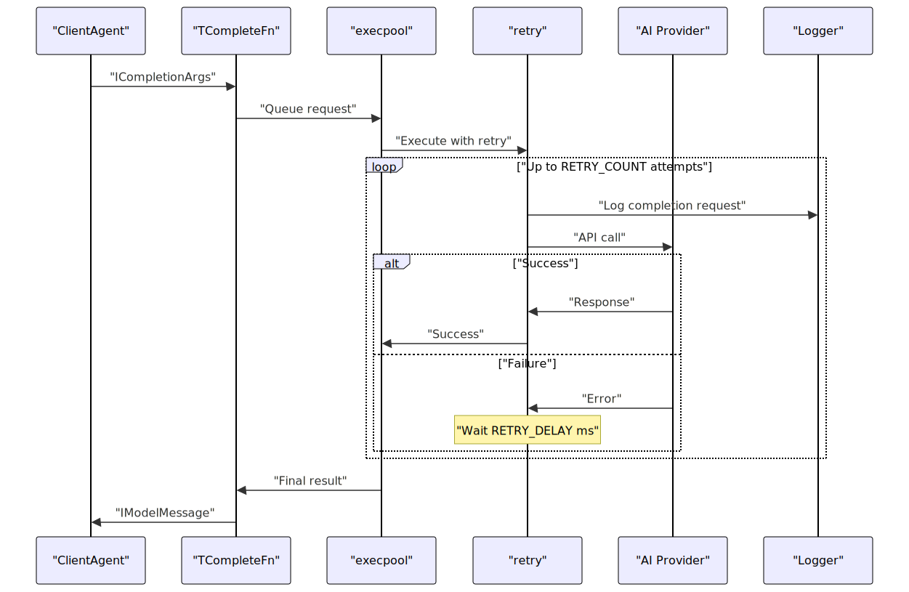

This document covers the AI integration layer of the agent-swarm-kit framework, including completion adapters for various AI providers, performance monitoring of AI operations, and execution management patterns. This system enables agents to communicate with different AI models through a unified interface while tracking performance metrics.
For information about agents that utilize these AI integrations, see Client Agent. For details on tool integration with AI models, see Tool Integration.
The framework provides a unified interface for integrating with multiple AI providers through the AdapterUtils class. Each adapter transforms provider-specific APIs into a standardized TCompleteFn interface that agents can use consistently.

Each adapter method in AdapterUtils creates a completion function tailored to a specific AI provider's API format:
| Adapter Method | Provider | Default Model | Key Features |
|---|---|---|---|
fromOpenAI |
OpenAI | "gpt-3.5-turbo" | Response format support, tool calls |
fromOllama |
Ollama | "nemotron-mini:4b" | Custom tool protocol, keep-alive |
fromLMStudio |
LMStudio | "saiga_yandexgpt_8b_gguf" | OpenAI-compatible API |
fromCohereClientV2 |
Cohere | "command-r-08-2024" | Cohere-specific message format |
fromCortex |
Cortex | "tripolskypetr:gemma-3-12b-it:gemma-3-12b-it-Q4_K_S.gguf" | Local model execution |
fromGrok |
Grok | "grok-3-mini" | X.AI's Grok model integration |
The adapters handle message transformation, tool call formatting, and response normalization to ensure consistent behavior across different AI providers.
All completion adapters utilize a robust execution pipeline with pooling and retry mechanisms:

The execution parameters are configured as constants:
EXECPOOL_SIZE: 5 concurrent executions maximumRETRY_COUNT: 5 retry attempts before failureRETRY_DELAY: 5000ms between retry attemptsThe framework implements a standardized tool call protocol that works across different AI providers, with special handling for providers that don't natively support structured tool calls.
Each adapter transforms messages between the unified IModelMessage format and provider-specific formats:

The PerfService class provides comprehensive performance monitoring for AI operations, tracking execution metrics, response times, and resource usage across all client sessions.

The performance service tracks AI completion operations from start to finish:
| Method | Purpose | Metrics Updated |
|---|---|---|
startExecution |
Begin tracking an execution | Input length, execution count, start time |
endExecution |
Complete tracking an execution | Output length, response time, total time |
getActiveSessionExecutionCount |
Get execution count for client | - |
getAverageResponseTime |
Calculate average response time | - |
The service generates structured performance reports through two main interfaces:

The IPerformanceRecord aggregates system-wide metrics while IClientPerfomanceRecord provides per-client breakdowns including session memory, state, and execution statistics.
The performance service computes comprehensive client state information by integrating with multiple services:

The AI integration layer includes several utility functions that support robust operation:
writeFileAtomic: Ensures atomic file writes for configuration and state persistenceremoveXmlTags: Cleans XML markup from AI responsesmsToTime: Converts milliseconds to human-readable time format for performance reportingobjectFlat: Flattens nested objects for logging and debuggingnameToTitle: Formats names for display purposesisObject: Validates plain JavaScript objects for safe data handling